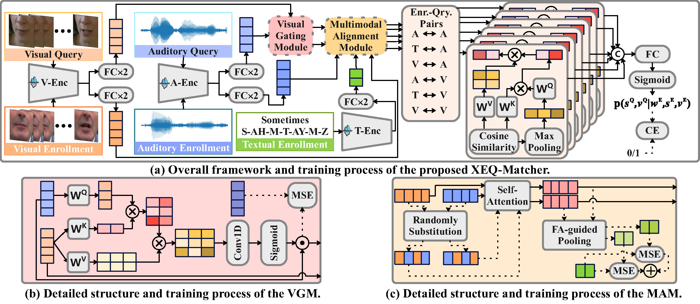

We provide an official baseline system for the MISP-QEKS challenge to facilitate reproducible research on tri-modal query-by-example keyword spotting. The baseline supports text–audio–visual enrollment and audio–visual query, and is designed for robust keyword matching under realistic noisy conditions.
As shown in FIgure 3, the baseline architecture consists of three key components:

Figure 3: Overview of the official MISP-QEKS baseline architecture.
| Setting | Split | AUC (%) | EER (%) |
|---|---|---|---|
| XEQ-Matcher | Eval-seen | 82.82 | 24.23 |
| XEQ-Matcher | Eval-unseen | 79.79 | 26.20 |
| XEQ-Matcher + VGM + MAM | Eval-seen | 85.94 | 21.60 |
| XEQ-Matcher + VGM + MAM | Eval-unseen | 85.44 | 21.49 |
Evaluation follows the official protocol using AUC and EER as primary metrics under both in-vocabulary (IV) and out-of-vocabulary (OOV) settings.
The complete baseline implementation, pretrained models, and detailed documentation are available on GitHub: